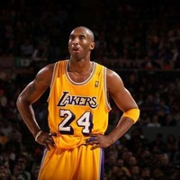

Kobe Bryant
.jpg)
Kobe Bryant "Kobe Bean Bryant" when he was little his parents named him after a type of steak. The beef is from a species of cattle, Wagyu, raised in the Kobe region of Japan. Bryant lived in Italy for eight years while his father played in the Italian Professional Basketball League. He speaks Italian fluently. Nominated for one Academy Award and won once. He entered the NBA straight out of high school. In 1996, Bryant was the youngest player in NBA history at that time, at 18 years, 2 months and 11 days. He played his entire professional career for the Los Angeles Lakers. Bryant has two Olympic gold medals for men's basketball. Bryant is third on the NBA all-time scoring list. He has also won five NBA championships. Bryant’s father, Joe (“Jelly Bean”) Bryant, was a professional basketball player who spent eight seasons in the NBA and eight more playing in Italy, where Bryant went to school. When his family returned to the United States, Bryant played basketball at Lower Merion High School in Ardmore, Pennsylvania, where he received several national Player of the Year awards and broke the southeastern Pennsylvania scoring record set by Wilt Chamberlain with 2,883 points. Bryant skipped college declared himself eligible for the NBA draft when he graduated from high school. The Charlotte Hornets chose him with the 13th pick of the 1996 draft. He was traded to the Lakers shortly thereafter and became the second youngest NBA player in history when the 1996–97 season opened. He quickly proved his merit with the Lakers and was selected for the NBA All-Star Game in just his second season, becoming the youngest all-star.
Back